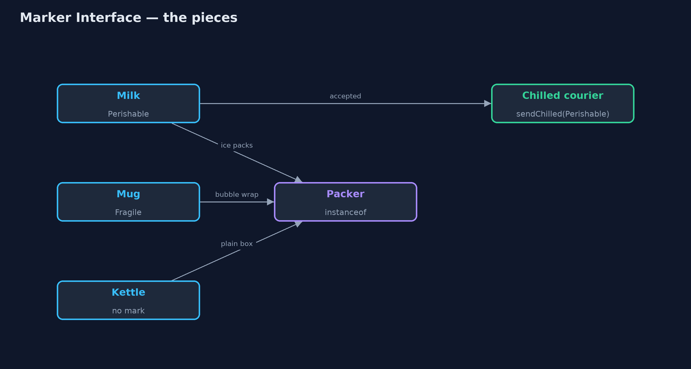
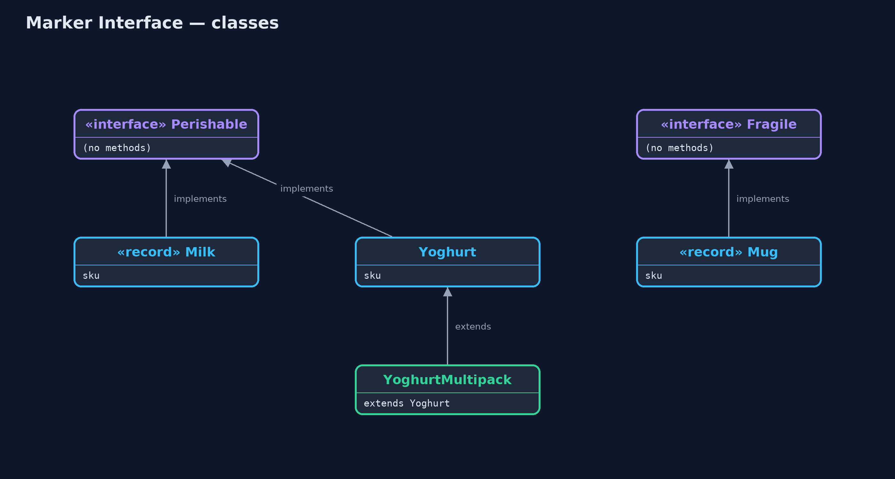
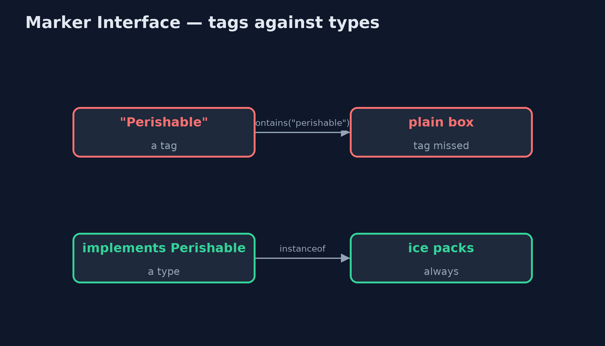
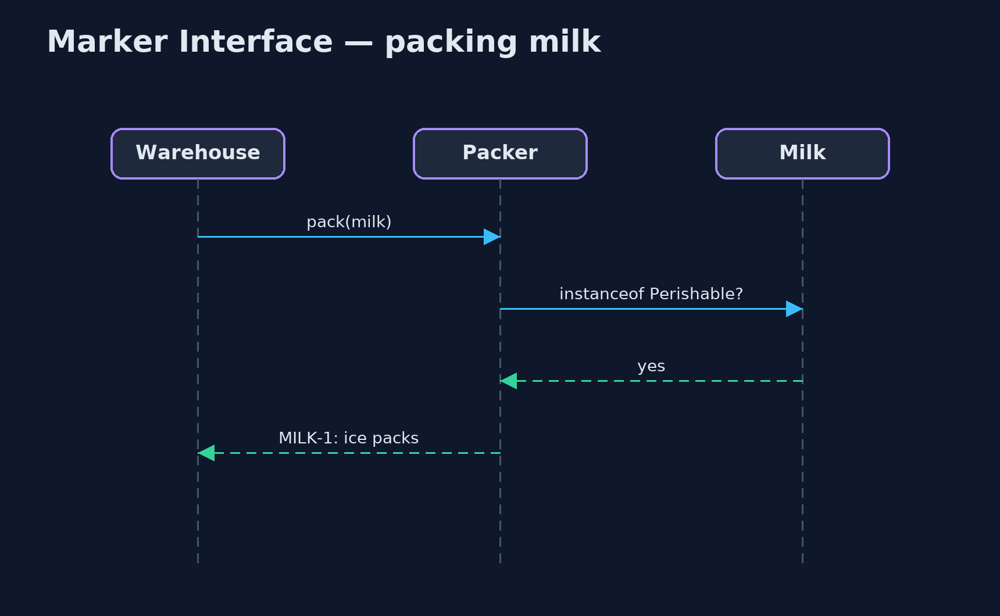

Marker Interface Pattern
src/main/java/com/jk/explore/markerinterface/
├── MarkerInterfaceDemo.java The five acts: free-text tags, marker interfaces, the compiler checking, marks passed on, and the bill
├── Markers.java The pattern: empty interfaces that say something about a type
├── Packer.java The warehouse packer and the chilled courier, both deciding by type
├── Products.java The shop's products
└── TaggedProduct.java Without the pattern: care instructions as free-text tags, typed by whoever adds the productMark a type with an empty interface, so code and the compiler can tell what kind of thing it is, instead of trusting free-text tags.
A marker interface is an interface with no methods at all. Its name is the whole message: a class that implements Perishable is saying "I must travel cold". Code can ask item instanceof Perishable, and, more usefully, a method can accept only Perishable things, so the compiler refuses anything else.
Java itself uses markers: Serializable and Cloneable are the famous ones. They are the typed alternative to tags, flags and strings, which are easy to misspell and impossible for the compiler to check.
The idea in everyday terms
Think of the stickers on a delivery box. A handwritten note saying "keep cold" can be misspelt, smudged, or written in a way nobody recognises. A printed, standard "keep cold" sticker is the same everywhere, recognised at a glance, and the chilled van only accepts boxes that carry it.
The scenario
The online store sells milk, cream and yoghurt that must travel with ice packs, mugs that need bubble wrap, and kettles that need nothing special. Care instructions were free-text tags typed in by whoever added the product. One milk was tagged "Perishable" with a capital P, and some cream "perishible". Both went out in a plain box.
Run
./gradlew runThe demo tells the story in 5 acts, each printing exact numbers that the tests check:
| Act | What it shows |
|---|---|
| 1. Free-text tags | MILK-1 tagged "perishable" gets ice packs; MILK-2 "Perishable" and CREAM-1 "perishible" go in a plain box. |
| 2. A marker interface | Milk implements Perishable and gets ice packs, the mug is Fragile and gets bubble wrap, the kettle gets a plain box. |
| 3. The compiler checks | sendChilled accepts only Perishable things: milk is taken; passing a kettle does not compile. |
| 4. The mark is passed on | YoghurtMultipack extends Yoghurt and gets ice packs, although its team never wrote Perishable. |
| 5. The bill | A marker cannot say how cold (that needs a method or an annotation), and a subclass cannot remove the mark. |
Test
./gradlew test8 tests in DemoRunsTest, PackerTest. Every number the demo prints is asserted, and nothing depends on the clock, so every run gives the same result.
Technologies and versions
| Technology | Version | Used for |
|---|---|---|
| Java | 21 | the code (toolchain set in build.gradle) |
| Gradle | 9.2.1 (wrapper) | build and run, nothing to install |
| JUnit | 5.10.2 | the tests |
| videokit | repository tool | the narrated video and animation: Piper en_US-amy-medium, speed 0.8, longer pauses (the approved amy-slow voice) |
Learning Material
| Document | What it is for |
|---|---|
| Problem statement | the situation and what the project must show |
| Prerequisites | what you need to know first |
| Marker Interface, explained | the acts in prose |
| Session guide | a one-hour lesson with exercises |
| Animated walkthrough | the acts step by step, narrated |
| Spec | what this project must be true of |
The pattern in one picture
Products carry marks in their type; the packer and the courier read them.

Where each piece sits
Two empty interfaces; products implement the ones that apply.

How the data moves
A tag depends on spelling; a type does not.

Who calls whom, in order
The packer asks the type.

Video
video/marker-interface-pattern-explained.mp4 (with .m4a audio and .srt subtitles) is built by video/build_video.sh. Rendered media is not committed.
What it costs
- Yes or no only. A marker cannot say how cold; that needs a method (then it is no longer a marker) or an annotation with a value.
- Cannot be taken off. A subclass inherits the mark and has no way to remove it.
- Casts appear. Code that receives a
Perishablesometimes has to cast it back to a product.
When this is too much
When the extra information needs values (a maximum temperature, a hazard class), or must be read by tools and frameworks rather than by the compiler, an annotation such as @Chilled(maxC = 5) fits better. Markers are for simple yes-or-no facts about a type that the compiler should check.
Where you have already met this
java.io.Serializable,java.lang.Cloneableandjava.util.RandomAccess.java.rmi.Remote, marking objects that can be called over the network.- Annotations such as
@FunctionalInterfaceand@Entity, the other way to mark a type.
Where this sits
This project is in foundational-design-patterns, next to Extension Object, which attaches roles to individual objects at run time. A marker belongs to the whole type and is fixed when the code compiles.